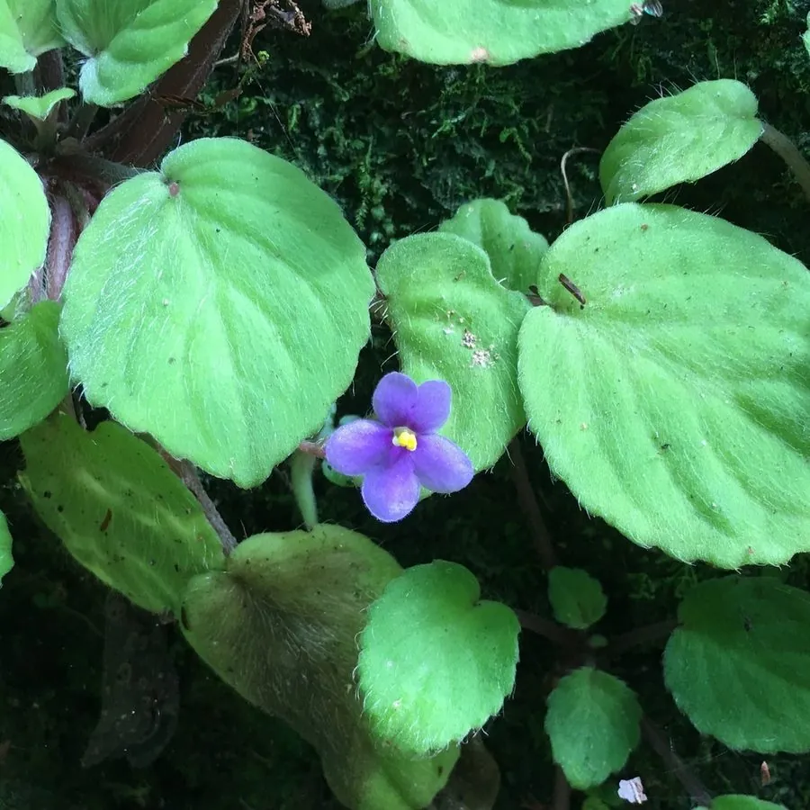

花卉与草本 · 植物界
非洲堇 Saintpaulia ionantha

苦苣苔科多年生草本，叶片肉质被毛、花朵小巧密集，耐阴好养，是室内窗台最受欢迎的盆栽花卉之一，原产东非。
- 分类
- 门被子植物门纲木兰纲目唇形目科苦苣苔科属非洲堇属
- 栖息环境
- 东非山区的阴湿岩缝与林下，喜温暖、湿润、散射光
- 地理分布
- 原产东非坦桑尼亚，现世界各地广泛盆栽，中国各地花市常见
- 保护级别
- 暂无评估
物种志
非洲堇为苦苣苔科非洲堇属多年生草本，株高 10–15 厘米，叶片肉质，卵形至圆形，表面密被短毛，呈莲座状排列。花葶自叶腋抽出，聚伞花序有花数朵，花冠 5 裂，有紫、蓝、粉、白及复色，花期可全年，以春秋最盛；果实为蒴果。
非洲堇原产东非坦桑尼亚的山区，生于阴湿的岩石和树干旁，喜温暖、湿润和明亮的散射光，忌强光暴晒和积水，是典型的室内花卉。它株型小巧、花期长，适合放在窗台、书桌和案头；叶插繁殖极容易，把叶片带叶柄插入微潮的基质即可长出新苗。浇水时避免淋湿叶片，否则容易引发叶斑病。
形态与习性
- 株高10–15 厘米，莲座状
- 花期可全年开花，春秋最盛
- 果期花后结蒴果
- 光照喜明亮散射光，忌强光
- 水分喜湿润，忌淋湿叶片
- 土壤疏松透气、富含腐殖质的基质
- 繁殖叶插、分株
- 主要用途室内盆栽、窗台观赏
趣味知识
- 非洲堇叶片表面密被短毛，浇水时淋到叶片容易引发叶斑病。
- 它株型小巧、花期长，是室内窗台最受欢迎的盆栽之一。
- 叶插繁殖极容易，把叶片带叶柄插入微潮基质即可长出新苗。
- 非洲堇原产东非山区，喜散射光，忌强光暴晒。